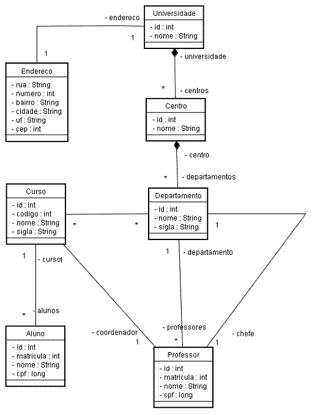

Informações
| Tipo: | Tutorial |
|---|---|
| Data de Publicação: | 27/10/2005 |
| Revisado em: | 27/10/2005 |
Vote!
Tags Relacionadas
Comentários ( 14 )
Imprimir
Primeiro Exemplo com Hibernate
por:
Raphaela Galhardo Fernandes (raphaela@jeebrasil.com.br)
Gleydson Lima (gleydson@jeebrasil.com.br)
Este tutorial apresenta um primeiro exemplo utilizando o Hibernate . Será apresentado o arquivo de mapeamento de uma classe, juntamente com o arquivo de mapeamento para as configurações gerais do Hibernate . Por fim, serão mostradas manipulações de objetos persistentes, ou seja, como se criar, remover e atualizar objetos na base de dados utilizando o Hibernate .
Primeiro Exemplo de Mapeamento com Hibernate
Inicialmente, o Hibernate precisa saber como carregar e armazenar objetos de classes persistentes. Para isso, existe um arquivo de mapeamento XML que informa que tabela do banco de dados deve ser acessada para uma dada classe persistente e quais colunas na tabela são referentes a quais atributos da classe. Qualquer classe pode ser mapeada desde que seja um POJO. É recomendável que as tabelas possuam chaves primárias, de forma que se possa aproveitar ao máximo as funcionalidades do Hibernate.
Para a maioria dos exemplos a serem ilustrados ao longo dos tutoriais, considere o digrama UML mostrado na Figura 1. Nele, é apresentado o domínio simplificado de uma universidade. Como se pode observar, uma universidade é formada por um identificador (id), um nome, possui um endereço e um conjunto de centros. Cada centro também possui um identificador (id), um nome, uma universidade a que pertence e é formado por um conjunto de departamentos. Cada departamento associa-se a um conjunto de cursos, possui uma coleção de professores e possui um professor como sendo seu chefe, além do seu identificador id e de seus demais atributos nome e sigla. Um curso possui um identificador, um código, um nome, uma sigla, um professor como seu coordenador, associa-se a um ou mais departamentos e possui um conjunto de alunos. Um professor possui um identificador, uma matrícula, um nome, um cpf e um departamento onde é lotado. Por fim, um aluno possui um identificador, uma matrícula, um nome, um cpf e um curso a que pertence.

Figura 1 - Diagrama UML: Domínio Universidade
Neste primeiro exemplo, será apresentado o mapeamento da classe Aluno em um arquivo XML, que o Hibernate utiliza para saber que classe no banco de dados a representa. Os arquivos de mapeamentos XML entre classes e tabelas do banco de dados devem ser nomeados como *.hbm.xml (convenção definida pela comunidade de desenvolvedores do Hibernate). É nos arquivos com a extensão .hbm.xml que o Hibernate realiza o mapeamento objeto relacional.
A classe que representa a entidade Aluno do diagrama da Figura 1 está ilustrada na Listagem 1.
package br.com.jeebrasil.dominio;
public class Aluno {
private int id;
private int matricula;
private String nome;
private long cpf;
private Curso curso;
public void Aluno(){}
public long getCpf() {
return cpf;
}
public void setCpf(long cpf) {
this.cpf = cpf;
}
public Curso getCurso() {
return curso;
}
public void setCurso(Curso curso) {
this.curso = curso;
}
public int getId() {
return id;
}
public void setId(int id) {
this.id = id;
}
public int getMatricula() {
return matricula;
}
public void setMatricula(int matricula) {
this.matricula = matricula;
}
public String getNome() {
return nome;
}
public void setNome(String nome) {
this.nome = nome;
}
}
Listagem 1 - Classe de Domínio: Aluno
Todos os arquivos XML que mapeiam as classes para as tabelas de banco de dados no Hibernate possuem a estrutura básica mostrada na Listagem 2. O arquivo XML começa normalmente com as definições da DTD (Definição do Tipo do Documento) e da tag raiz, o <hibernate-mapping>, depois vem a tag que nos interessa neste caso, <class>.
Os elementos para o mapeamento objeto relacional encontram-se entre as tags hibernate-mapping.
<!DOCTYPE hibernate-mapping PUBLIC
"-//Hibernate/Hibernate Mapping DTD 3.0//EN"
"http://hibernate.sourceforge.net/hibernate-mapping-3.0.dtd">
<hibernate-mapping>
...
</hibernate-mapping>
Listagem 2 - Estrutura Básica do Arquivo *.hbm.xml
Para a classe Aluno considere seu arquivo de mapeamento como sendo o Aluno.hbm.xml. A partir deste momento, o cabeçalho do arquivo XML será ocultado e o conteúdo entre as tags hibernate-mapping será apresentado.
O primeiro passo do mapeamento é informar que classe de domínio se refere a que tabela do banco de dados, através da tag <class>, como mostrado na Listagem 3. O único atributo obrigatório desta tag é o name, que contém o nome completo da classe. Se o nome da classe for diferente do nome da tabela a que se referencia, o nome da tabela é informado a partir do atributo table.
<hibernate-mapping>
<class name="br.com.jeebrasil.dominio.Aluno" table="ALUNO">
...
</class>
</hibernate-mapping>
Listagem 3 - Aluno.hbm.xml 1
Em seguida, mapeia-se a chave primária da tabela, como mostrado na Listagem 4.
<hibernate-mapping>
<class name="br.com.jeebrasil.dominio.Aluno" table="ALUNO">
<id name="id" column="ID_ALUNO" type="int">
<generator class="sequence">
<param name="sequence">aluno_seq</param>
</generator>
</id>
</class>
</hibernate-mapping>
Listagem 4 - Aluno.hbm.xml 2
A tag id identifica a chave primária. O atributo name="id" informa o nome do atributo da classe Java que se refere à chave primária da tabela. O Hibernate utiliza os métodos getter e setter para acessar este atributo. O atributo column informa ao Hibernate que coluna na tabela é a chave primária, no caso ID_ALUNO. O atributo generator informa qual a estratégia para a geração da chave primária, para esse exemplo, a estratégia utilizada foi sequence. Dessa forma, o nome da seqüência também deve ser informado (aluno_seq) através da tag param.
Agora as declarações das propriedades persistentes das classes serão incluídas no arquivo de mapeamento. Por padrão, os atributos das classes não são considerados como persistentes. Para se tornarem, é necessário incluí-los no arquivo de mapeamento.
Na Listagem 5, são incluídos os mapeamentos das propriedades persistentes através da tag property. Essas tags indicam propriedades simples dos objetos, como por exemplo, String, os tipos primitivos e seus wrappers, objetos Date, Calendar, entre outros.
<hibernate-mapping>
<class name="br.com.jeebrasil.dominio.Aluno" table="ALUNO">
<id name="id" column="ID_ALUNO" type="int">
<generator class="sequence">
<param name="sequence">aluno_seq</param>
</generator>
</id>
<property name="matricula" type="int" column="MATRICULA"/>
<property name="nome"/>
<property name="cpf" type="long" column="CPF"
not-null="false"/>
<many-to-one name="curso" class="br.com.jeebrasil.dominio.Curso"
column="ID_CURSO"/>
</class>
</hibernate-mapping>
Listagem 5 - Aluno.hbm.xml 3
Os nomes das propriedades da classe são definidos pelo atributo XML name, o tipo da propriedade pelo atributo type e a coluna da tabela a que se refere, por column. Observe que a propriedade nome não possui seu tipo e coluna a que se referenciam definidos. Se o atributo column não aparece no mapeamento da propriedade, o Hibernate considera que a coluna na tabela do banco de dados a que se referencia possui o mesmo nome que o definido pelo atributo name. Em relação ao atributo type não ser definido, o Hibernate também tenta, analisando o tipo da coluna na tabela, converter para o tipo adequado Java.
O atributo not-null presente no mapeamento do atributo cpf serve para informar se a coluna pode ser ou não nula na tabela. Se for true, não pode ser nula. Se for false, pode assumir valor nulo.
A última tag do arquivo <many-to-one> define o relacionamento n-para-1 que a classe Aluno tem com a classe Curso. Uma descrição mais detalhada desta tag será feita no próximo tutorial.
Depois de criar todas as classes persistentes com seus respectivos mapeamentos *.hbm.xml, deve-se realizar algumas configurações do Hibernate.
Configurando o Hibernate
Existem três maneiras distintas para se configurar o Hibernate:
- Instanciar um objeto de configuração (org.hibernate.cfg.Configuration) e inserir suas propriedades programaticamente;
- Usar um arquivo .properties com as suas configurações e indicar os arquivos de mapeamento programaticamente;
- Usar um arquivo XML (hibernate.cfg.xml) com as propriedades de inicialização e os caminhos dos arquivos de mapeamento.
Será apresentada a configuração a partir do arquivo hibernate.cfg.xml. Um exemplo deste arquivo de configuração pode ser visto na Listaegem 6. Vários parâmetros podem ser configurados. Basicamente, deve-se configurar:
- A URL de conexão com o banco de dados;
- Usuário e senha do banco de dados;
- Números máximo e mínimo de conexões no pool;
- Dialeto.
<?xml version="1.0" encoding="utf-8"?>
<!DOCTYPE hibernate-configuration PUBLIC
"-//Hibernate/Hibernate Configuration DTD 3.0//EN"
"http://hibernate.sourceforge.net/hibernate-configuration-3.0.dtd">
<hibernate-configuration>
<!-- a SessionFactory instance listed as /jndi/name -->
<session-factory name="java:comp/env/hibernate/SessionFactory">
<!-- properties -->
<property name="connection.driver_class">
org.postgresql.Driver
</property>
<property name="connection.url">
jdbc:postgresql://localhost:5432/banco
</property>
<property name="dialect">
org.hibernate.dialect.PostgreSQLDialect
</property>
<property name="show_sql">true</property>
<property name="connection.username">postgres</property>
<property name="connection.password">postgres</property>
<property name="connection.pool_size">10</property>
<!-- mapping files -->
<mapping resource="br/com/jeebrasil/conf/Aluno.hbm.xml"/>
<mapping resource=" br/com/jeebrasil/Centro.hbm.xml"/>
<mapping resource=" br/com/jeebrasil/Curso.hbm.xml"/>
<mapping resource=" br/com/jeebrasil/Departamento.hbm.xml"/>
<mapping resource=" br/com/jeebrasil/Professor.hbm.xml"/>
<mapping resource=" br/com/jeebrasil/Universidade.hbm.xml"/>
</session-factory>
</hibernate-configuration>
Listagem 6 - hibernate.cfg.xml
Resumindo as descrições das propriedades a serem configuradas:
- hibernate.dialect: implementação do dialeto SQL específico do banco de dados a ser utilizado. Usado para identificar as particularidades do banco de dados;
- hibernate.connection.driver_class: nome da classe do driver JDBC do banco de dados que está sendo utilizado;
- hibernate.connection.url: é a URL de conexão específica do banco que está sendo utilizado;
- hibernate.connection.username: é o nome de usuário com o qual o Hibernate deve se conectar ao banco;
- hibernate.connection.password: é a senha do usuário com o qual o Hibernate deve se conectar ao banco;
- hibernate.connection.pool_size: tamanho do pool de conexões;
- hibernate.connection.isolation: define o nível de isolamento. Parâmetro opcional;
- hibernate.show_sql: utilizado para definir se os SQL’s gerados pelo Hibernate devem ou não ser exibidos (true | false ).
O Hibernate trabalha com dialetos para um grande número de bancos de dados, tais como: DB2, MySQL, Oracle, Sybase, Progress, PostgreSQL, Microsoft SQL Server, Ingres, Informix entre outros. Possíveis valores para os dilates estão presentes na Listagem 7.
DB2 - org.hibernate.dialect.DB2Dialect HypersonicSQL - org.hibernate.dialect.HSQLDialect Informix - org.hibernate.dialect.InformixDialect Ingres - org.hibernate.dialect.IngresDialect Interbase - org.hibernate.dialect.InterbaseDialect Pointbase - org.hibernate.dialect.PointbaseDialect PostgreSQL - org.hibernate.dialect.PostgreSQLDialect Mckoi SQL - org.hibernate.dialect.MckoiDialect Microsoft SQL Server - org.hibernate.dialect.SQLServerDialect MySQL - org.hibernate.dialect.MySQLDialect Oracle (any version) - org.hibernate.dialect.OracleDialect Oracle 9 - org.hibernate.dialect.Oracle9Dialect Progress - org.hibernate.dialect.ProgressDialect FrontBase - org.hibernate.dialect.FrontbaseDialect SAP DB - org.hibernate.dialect.SAPDBDialect Sybase - org.hibernate.dialect.SybaseDialect Sybase Anywhere - org.hibernate.dialect.SybaseAnywhereDialect
Listagem 7 - Possíveis valores de dialetos
O final do arquivo hibernate.cfg.xml é onde devem ser informados os arquivos de mapeamentos das classes que o Hibernate deve processar. Se algum arquivo de mapeamento não for definido neste local, a classe a que se refere não poderá ser persistida utilizando o Hibernate.
Manipulando Objetos Persistentes
O Hibernate utiliza objetos Session para persistir e recuperar objetos. Um objeto Session pode ser considerado como uma sessão de comunicação com o banco de dados através de uma conexão JDBC.
O código fonte exibido na Tabela 8 mostra a criação e persistência de um objeto do tipo Aluno.
...
1. try{
2. //SessionFactory deve ser criado uma única vez durante a execução
3 //da aplicação
4 SessionFactory sf = new Configuration()
5 .configure("/br/com/jeebrasil/conf/hibernate.cfg.xml")
6. .buildSessionFactory();
7.
8. Session session = sf.openSession(); //Abre sessão
9. Transaction tx = session.beginTransaction(); //Cria transação
10.
11. //Cria objeto Aluno
12. Aluno aluno = new Aluno();
13. aluno.setNome("Luis Eduardo Pereira Júnior");
14. aluno.setMatricula(200027803);
15. aluno.setCpf(1234567898);
16. aluno.setCurso(curso); //Considera-se que o objeto “curso” já
17. //havia gravado na base de dados e
18. //recuperado para ser atribuído neste
19. // momento.
20. session.save(aluno); //Realiza persistência
21. tx.commit(); //Fecha transação
22. session.close(); //Fecha sessão
23. }catch(HibernateException e1){
24. e1.printStackTrace();
25. }catch(SQLException e2){
26. e2.printStackTrace();
27. }
Listagem 8 - Exemplo de Persistência
O código presente nas linhas 4-6 deve ser chamado uma única vez durante a execução da aplicação. O objeto SessionFactory armazena os mapeamentos e configurações do Hibernate. É um objeto pesado e lento de se criar.
A Tabela 1 apresenta alguns dos métodos que podem ser invocados a partir do objeto Session.
| save(Object) | Inclui um objeto em uma tabela do banco de dados. |
| saveOrUpdate(Object) | Inclui um objeto na tabela caso ele ainda não exista (seja transiente) ou atualiza o objeto caso ele já exista (seja persistente). |
| delete(Object) | Apaga um objeto da tabela no banco de dados. |
| get(Class, Serializable id) | Retorna um objeto a partir de sua chave primária. A classe do objeto é passada como primeiro argumento e o seu identificador como segundo argumento. |
Tabela 1 - Métodos invocados a partir do objeto Session
Em relação ao método saveOrUpdate, uma questão que se pode formular é "Como o Hibernate sabe se o objeto em questão já existe ou não no banco de dados, ou seja, se ele deve ser criado ou atualizado?". A resposta é simples: o desenvolvedor deve informar isso a ele. Essa informação é incluída no arquivo de configuração *.hbm.xml da classe na tag que define a chave primária. No caso da classe Aluno, a tag da chave primária no arquivo Aluno.hbm.xml deve ter o atributo <unsaved-value> adicionado, como mostrado na Listagem 9. Neste caso com o atributo unsaved-value="0" significa que, no momento da chamada ao método saveOrUpdate(Objetc obj), se o atributo identificador do objeto estiver com valor 0 (zero) significa que ele deve ser criado na tabela do banco de dados. Dessa forma, se o seu valor for diferente de zero, o objeto deve ter sua linha na tabela atualizada (deve-se garantir que o valor do identificador do objeto se refere a um valor da chave primária da tabela).
…
<id name="id" column="ID_ALUNO" type="int" unsaved-value="0">
<generator class="sequence">
<param name="sequence">aluno_seq</param>
</generator>
</id>
…
Listagem 9 - Trecho de Aluno.hbm.xml
As Listagens 10 e 11 apresentam exemplos dos métodos invocados a partir do objeto Session.
... Session session = sf.openSession(); Transaction tx = session.beginTransaction(); //Busca objeto aluno da base de dados com chave primária = 1 Aluno aluno = (Aluno) session.get(Aluno.class, 1); //Atualiza informação de matrícula. aluno.setMatricula(200027807); //Como o identificador do objeto aluno é diferente de 0, //a sua matrícula é atualizada já que foi alterada session.saveOrUpdate(aluno); tx.commit(); session.close(); ...
Listagem 10 - Exemplo de Busca e Atualização de Objeto
... Session session = sf.openSession(); Transaction tx = session.beginTransaction(); Aluno aluno = new Aluno(); //Existe linha na tabela aluno com chave primária = 2 aluno.setId(2); //Deleta aluno com id = 2 da tabela. //Somente necessária informação do seu identificador session.delete (aluno); tx.comiit(); session.close(); ...
Listagem 11 - Exemplo de Remoção de Objeto
Conclusões
Neste tutorial foi apresentado um primeiro exemplo de mapeamento e como ele pode ser manipulado de forma persistente. Pode ser que a primeira impressão ao se utilizar o Hibernate seja que a criação dos mapeamentos é um pouco difícil e trabalhosa, mas à medida que novos exemplos vão sendo feitos e que se adquire a prática, verifica-se que utilizar o Hibernate como framework de mapeamento objeto-relacional trará benefícios, principalmente no quesito de produtividade.
O próximo tutorial trará como mapear os relacionamentos entre as entidades utilizando o Hibernate.
Referências
- Christian Bauer e Gavin King. Hibernate in Action. 2005.
- Grupo Hibernate. Hibernate Reference Documentation. Version 3.0.5. Obtido em http://www.hibernate.org
- Gleydson de Azevedo Ferreira Lima. Material Didático. 2005.
- Nick Heudecker. Introdução ao Hibernate.
- Maurício Linhares. Introdução ao Hibernate 3.
- Francesc Rosés Albiol. Introducción a Hibernate. 2003.
- Fabiano Kraemer, Jerônimo Jardel Vogt. Hibernate, um Robusto Framework de Persistência Objeto-Relacional. 2005.
Comentários (14)
- material de qualidade, nao me refiro só a esse artigo, mas a todos q falam de Hibernate. Vejo q vc's tem compromisso com desenvolviemento do conhecimento.
- postado por Frank em 17/10/2006 às 23:21
- É esse tipo de conteúdo que me enconraja a usar novas tecnologias em meus projetos. Muito bom, parabéns!
- postado por Roberval em 26/10/2006 às 23:21
- Ola, gostaria de parabenizar vocês, realmente esse artigo foi toda a base do meu aprendizado.
- postado por Laverson Espíndola em 28/11/2006 às 23:21
- Gostaria de parabenizar e agradecer pelo compromisso de ampliar o conhecimento. Parabens pelo material disponibilizado.
- postado por Julio Cesar M Silva em 02/01/2007 às 23:21
- Gostei muito deste pequeno exemplo... Eu, que não tinha idéia alguma das "entranhas" do Hibernate, comecei a ver e entender as "idéias iniciais" do produto... Parabéns a vocês e espero que disponibilizaem mais materiais...
- postado por Luis Palhares em 03/02/2007 às 23:21
- Agora sim ficou mais claro em relação ao primeiro artigo. Nada como a prática. Parabéns. Muito bom.
- postado por Franklin Arruda em 08/02/2007 às 23:21
- Ótimos os materiais apresentados por vocês; Estou querendo aprender a usar o hibernate, e colocar em prática estes artigos, gostaria de estar implementando-os no Netbeans 5.5 com o PostgreSQL. Gostaria de saber se vocês não chegaram a implementar tanto a parte (1,2) no Netbeans ou Eclipse. Caso tenha se puderem me enviar para estudar e refazer seria bom. Pergunto isto pois fiquei com dúvias no exemplo da Tabela 11 (Exemplo de Busca e Atualização de Objetos). Quando você passa o valor 1, você já sabe que o identificador la no banco para esta tabela tem o id = 1? E se caso eu tivesse a seguinte situacao: Tres tabelas (Cliente, Frete, Cidade) um modelinho de transportadora onde um mesmo cliente pudesse ter varios fretes, ou seja varias entradas na tabela frete e o identificador da tabela frete fosse um serial not null unique? como faria?
- postado por Julian Fernando de Almeida Cambraia em 05/03/2007 às 23:21
- Muito bom mesmo, cheio de detalhes e informações que não encontras facilmente. Parabens!!!
- postado por Antônio Carlos da Silva em 12/05/2007 às 23:21
- Endossando os comentários já postados. Parabens!!
- postado por Márcio Miguel em 12/07/2007 às 23:21
- Grandes instruções!!! Parabéns.
- postado por Otílio Júnior em 06/08/2007 às 23:21
- acho que o exemplo está muito bem conseguido, para quem não tem conhecimento nenhum acerca do hibernate (como eu) é uma boa ajuda para iniciar... parabéns!!!!!!
- postado por Cristóvão Neto em 02/04/2008 às 23:21
- Um dos melhores tutoriais que ja vi , bem claro e elucidativo , parabens
- postado por Flávio Souza em 17/02/2009 às 23:21
- Eu que não tinha visão alguma de como o hibernate era usado, aprendi nesse tutorial de forma clara e objetiva o seu uso! Cada vez mais me convenço que informática nunca foi e não é complexa, o que tem é muita gente sem didática alguma para explicar as coisas numa sequência lógica e objetiva como o material de vocês. Parabéns! Excelênte material.
- postado por Marcos Nobre em 21/08/2009 às 23:21
- De fato, muito bom! Bem explicado, objetivo e ótimo pra quem está começando. Obrigada
- postado por Elyda em 05/09/2009 às 23:21